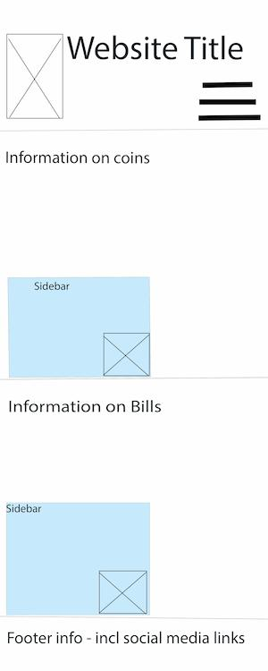

Site name: Numismatics Collector: Coin and Bill Collectors
This name is chosen because it will be a resource for coin and bill collectors to get basic information. Numismatics refers to coins and bills
Available domain: numismaticscollector.com
Site purpose:
- This website will involve a little history of coins and bills in the United states.
- Separate pages will be devoted. One to coins, and one to bills.
- Another page of resources to learn more, favorite websites, etc.
Scenarios:
- What is numismatics? Definition of numismatic: Relating or consiting of coins, paper cureency, and medals
- Showing the history
- What is this coin worth?
- Are there any gatherings in my area for collectors?
- Where can a person buy coins?
- Helpful links for more resources
Color Schemas:
Green/gray - to reflect bills.
Silver(french gray) and Gold - to represent metalic coins
https://coolors.co/57636d-c2bac9-cb8a69-b8abba-cac6b8
57636D (paynes' gray) - C2BAC9 (French Gray) - CB8A69 (Persian orange) - B8ABBA (Rose quartz) - CAC6B8
(Bone)
Typography:
For headers: a font with a serif: EB Garamond, Noto-Serif
For general use in text: Roboto, Mulish
Wireframe
Main Page Wireframe
Main Page Wireframe - mobile view
Other pages wireframe